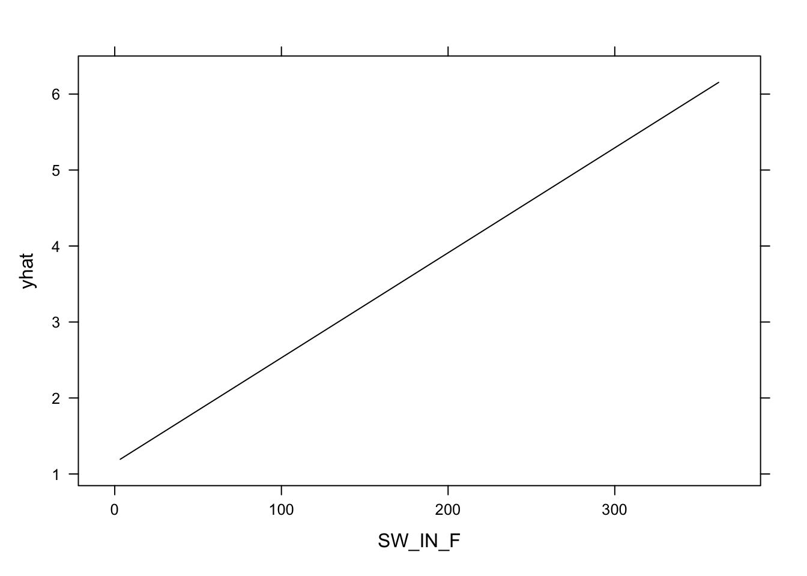

Chapter 8 Supervised Machine Learning II
8.1 Introduction
8.1.1 Learning objectives
After this learning unit, you will be able to …
- Explain the effect of hyper-parameter tuning.
- Assess the generalisability of a trained model.
- Understand the purpose of resampling.
- Avoid data leakage during model training.
8.1.2 Key points from the lecture
Training data is the data that is used to train our model - “to fit a curve to the data points.”
Testing data is set aside at the initial split and not “touched” during model training. It is key to test a model’s predictive power and whether it is overfitted.
Validation data is used for determining the loss during model training. The reason for distinguishing between testing and validation data is to assure we’re not misleading model training by some peculiarities of the training data and we get an assessment of generalisability based on data that was not seen during model training. This distinction might be somewhat confusing for now, have a look at this blog post for additional explanations.
Model training minimises the loss. In other words, it optimises the agreement between predicted and observed values. The loss is most commonly measured by the root mean square error (RMSE).
To tune a model, you can set hyperparameters that determine model structure or calibrate the coefficients. The k in KNN is such a hyperparameter.
Generalisability refers to the model’s performance on data not seen during the training - the testing data. To avoid overfitting, model generalisability is desired already during model training. One method to guide model training is cross validation.
Data leakage is when information from the testing dataset “creeps” into the training data. To avoid this the testing set must be left completely untouched!
8.2 Tutorial
8.2.1 Model formulation using train()
In the previous tutorial you learned how to wrangle, split and pre-process data (remember the recipes) and how to formulate a linear model in base R. To learn more about model creation, let us first repeat the data preparation from the previous tutorial:
## Load data and extrat relevant subset
library(tidyverse)
ddf <- read_csv("./data/FLX_CH-Dav_FLUXNET2015_FULLSET_DD_1997-2014_1-3.csv") %>%
select(starts_with("TIMESTAMP"),
ends_with("_F"),
GPP_NT_VUT_REF,
NEE_VUT_REF_QC,
-contains("JSB")) %>%
mutate(TIMESTAMP = lubridate::ymd(TIMESTAMP)) %>%
na_if(-9999) %>%
select(-ends_with("_QC"), NEE_VUT_REF_QC) %>%
mutate(GPP_NT_VUT_REF = ifelse(NEE_VUT_REF_QC < 0.9, NA, GPP_NT_VUT_REF)) %>%
select(-NEE_VUT_REF_QC) %>%
drop_na()
## Split data into testing and training data
library(rsample)
set.seed(1982) # for reproducibility
split <- initial_split(ddf, prop = 0.7)
ddf_train <- training(split)
ddf_test <- testing(split)
## Base R formulation for linear model
lm(GPP_NT_VUT_REF ~ SW_IN_F + VPD_F + TA_F, data = ddf)##
## Call:
## lm(formula = GPP_NT_VUT_REF ~ SW_IN_F + VPD_F + TA_F, data = ddf)
##
## Coefficients:
## (Intercept) SW_IN_F VPD_F TA_F
## 1.08298 0.01334 -0.34573 0.30404Ideally, the way we formulate a model should be independent of the
algorithm, or engine that takes care of fitting \(f(X)\). As mentioned
in the previous tutorial, the R package
caret provides a unified
interface for using different ML algorithms implemented in separate
packages. In other words, caret acts as a wrapper for multiple
different model fitting, or ML algorithms. This has the advantage that
it unifies the interface (the way arguments are provided). caret
also provides implementations for a set of commonly used tools for data
processing, model training, and evaluation. We’ll use caret for
model training with the function train(). Using caret for specifying
the same linear regression model as above, using the base-R lm()
function, can be done with caret in a generalized form as:
library(caret)
train(
form = GPP_NT_VUT_REF ~ SW_IN_F + VPD_F + TA_F,
data = ddf,
method = "lm"
)## Linear Regression
##
## 5893 samples
## 3 predictor
##
## No pre-processing
## Resampling: Bootstrapped (25 reps)
## Summary of sample sizes: 5893, 5893, 5893, 5893, 5893, 5893, ...
## Resampling results:
##
## RMSE Rsquared MAE
## 1.58713 0.668969 1.228773
##
## Tuning parameter 'intercept' was held constant at a value of TRUEOf course, this is an overkill compared to just writing lm(...). But
the advantage of the unified interface is that we can simply replace the
method argument to use a different ML algorithm. For example, to use a
random forest model implemented by the ranger package, we can write:
train(
form = GPP_NT_VUT_REF ~ SW_F_IN + VPD_F + TA_F,
data = ddf,
method = "ranger",
...
)The ... hints at the fact that there are a few more arguments to be
specified for training a random forest model with ranger. We learn more
about these arguments below in Chapter 7.3.3.1.
Another useful aspect of using caret to formulate models is that it takes recipes from the recipes packages as input. This way, we can make sure that the exact same pre-processing steps are taken for the training data, testing data and as will be introduced later, the validation data.
library(recipes)
pp <- recipe(GPP_NT_VUT_REF ~ SW_IN_F + VPD_F + TA_F, data = ddf) %>%
step_center(all_numeric(), -all_outcomes()) %>%
step_scale(all_numeric(), -all_outcomes())The object pp can then be supplied to train() as its first argument:
train(
pp,
data = ddf,
method = "ranger",
...
)8.2.2 Model training
Model training in supervised ML is guided by the match (or mismatch) between the predicted and observed target variable(s), that is, between \(\hat{Y}\) and \(Y\). The loss function quantifies this mismatch (\(L(\hat{Y}, Y)\)), and the algorithm takes care of progressively reducing the loss during model training.
Let’s say the ML model contains two parameters and predictions can be considered a function of the two (\(\hat{Y}(w_1, w_2)\)). \(Y\) doesn’t change as a function of $w_1$ and $w_2$. Thus, the loss function is effectively a function \(L(w_1, w_2)\). Therefore, we can consider the model training as a search of the parameter space of the machine learning model \((w_1, w_2)\) to find the minimum of the loss. Common loss functions are the root mean square error (RMSE), or the mean square error (MSE), or the mean absolute error (MAE). Loss minimization is a general feature of ML model training.

Figure 8.1: Visualization of a loss function as a plane spanned by the two parameters \(w_1\) and \(w_2\).
Model training is implemented in R for different algorithms in different
packages. Some algorithms are even implemented by multiple packages
(e.g., nnet and neuralnet for artificial neural networks). Again,
caret comes to the rescue as it offers a large selection of ML model
implementations from different packages (see
here for an
overview of available models). The train() function takes an argument
metric, which specifies the loss function and defaults to the RMSE for
regression models and to accuracy for classification (see chapter on
metrics below).
8.2.2.1 Hyperparameter tuning
All ML algorithms have some “knobs” to turn in order to achieve efficient model training and predictive performance. Such “knobs” are called hyperparameters and their meaning and effect depend on the ML algorithm.
For k-nearest neighbour (KNN), it is k - the number of neighbours to
consider for determining distances. There is always an optimum \(k\).
Obviously, if \(k = n\), we consider all observations as neighbours and
each prediction is simply the mean of all observed target values \(Y\),
irrespective of the predictor values. This cannot be optimal and such a
model is likely underfit. On the other extreme, with \(k = 1\), the model
will be strongly affected by the noise in the single nearest neighbour
and its generalisability will suffer. This should be reflected in a poor
performance on the validation data.
For random forests from the ranger package, hyperparameters are:
mtry: the number of variables to consider to make decisions, often taken as \(p/3\), where \(p\) is the number of predictors.min.node.size: the number of data points at the “bottom” of each decision treesplitrule: the function applied to data in each branch of a tree, used for determining the goodness of a decision
Hyperparameters usually have to be “tuned” and their optimal values
depend on the data. Therefore they cannot be known a priori but must
be found on-the-go. In caret, hyperparameter tuning is implemented
as part of the train() function. Values of hyperparameters to consider
are to be specified by the argument tuneGrid, which takes a data frame
with column(s) named according to the name(s) of the hyperparameter(s)
and rows for each combination of hyperparameters to consider. To specify
the three hyperparameters of a random forest model would look like this:
train(
form = GPP_NT_VUT_REF ~ SW_F_IN + VPD_F + TA_F,
data = ddf,
method = "ranger",
tuneGrid = expand.grid( .mtry = floor(6 / 3),
.min.node.size = c(3, 5, 9,15, 30),
.splitrule = c("variance", "maxstat")),
...
)Here, expand.grid() is used to generate a data frame with all possible
combinations of individual vectors (e.g. min node size) and their
provided values (e.g. 3, 5, 9, 15, 30). For a KNN, it suffices to enter
a dataframe with one vector of numbers as argument to tuneGrid (e.g.,
data.frame(k = c(2, 5, 10, 15, 18, 20, 22, 24, 26, 30, 35, 40, 60, 100))).
The train() function will then create a KNN for each of these numbers
to find the optimal k.
8.2.2.2 Resampling
The goal of model training is to achieve the best possible model generalisability. That is, the best possible model performance when predicting to data that was not used for training - the test data. Resampling mimicks the comparison of predictions to the test data. Instead of using all training data, the training data is resampled into a number further splits - pairs of training and validation data. Model training is then guided by minimising the average loss determined on each resample of the validation data. Having multiple resamples (multiple folds of training-validation splits) avoids the loss minimization from being misguided by random peculiarities in the training and/or validation data.
A common resampling method is k-fold cross validation, where the training data is split into k equally sized subsets (folds). Then, there will be k iterations, where each fold is used for validation once (while the remaining folds are used for training). An extreme case is leave-one-out cross validation, where k corresponds to the number of data points.
).](figures/cv.png)
Figure 8.2: Cross-validation resampling (figure from Boehmke & Greenwell (2019)).
To do a k-fold cross validation during model training in R, we don’t
have to implement the loops around folds ourselves. The resampling
procedure can be specified in the caret function train() with the
argument trControl. The object that this argument takes is the output
of a function call to trainControl(). This can be implemented in two
steps. For example, to do a 10-fold cross-validation, we can write:
train(
pp,
data = ddf_train,
method = "ranger",
tuneGrid = expand.grid( .mtry = floor(6 / 3),
.min.node.size = c(3, 5, 9,15, 30),
.splitrule = c("variance", "maxstat")),
trControl = trainControl(method = "cv", number = 10),
...
)In certain cases, data points stem from different “groups,” and
generalisability across groups is critical. In such cases, data from a
given group must not be used both in the training and validation sets.
Instead, splits should be made along group delineations. The caret
function groupKFold() offers the solution for this case.
8.2.3 Model evaluation
In previous chapters, you have already encountered different metrics that can be used to quantify the agreement between predicted (\(\hat{y}\)) and observed (\(y\)) values (e.g., the root mean square error). These metrics are essential to guide model training and inform the evaluation. Different metrics measure different aspects of the model-data agreement and different metrics are used for regression and classification models.
8.2.3.1 Metrics for regression models
Different metrics measure, for example, the correlation between modeled and observed values or the magnitude of the errors. To get an intuitive understanding of their different abilities, compare the scatterplots in Figure 8.3 and how different aspects of the model-data agreement are measured by different metrics. Their definitions will follow below.

Figure 8.3: Comparison of model metrics on different data sets.
MSE: The mean squared error is defined, as its name suggests, as: \[ \text{MSE} = \frac{1}{n} \sum_{i=1}^n (y_i - \hat{y_i})^2 \]It measures accuracy, i.e., the magnitude of the errors, and is minimized during model training when used as a loss function. Note that since it scales with the square of the errors, the MSE is particularly sensitive to large errors in single points (including outliers). You may notice the difference to the error variance \(\widehat{\sigma}^2\). It was defined in Chapter 7 similar to the definition of the MSE above, but with \(n-p\) in the denominator instead of \(n\). The denominator \(n-p\) corresponds to the degrees of freedom (size of our sample minus the number of parameters to estimate). Here we want to compute the mean of the errors, hence we divide by \(n\).
RMSE: The root mean squared error is, as its name suggests, the root of the MSE: \[ \text{RMSE} = \sqrt{\text{MSE}} = \sqrt{\frac{1}{n} \sum_{i=1}^n (y_i - \hat{y_i})^2} \]Like the MSE, the RMSE also measures accuracy (the magnitude of the errors) and is minimized during model training. By taking the square root of mean square errors, the RMSE is in the same units as the data \(y\) and is less sensitive to outliers as the MSE.
Checkpoint
Implement the formula for RMSE using simple “low-level” functions like
sqrt() and mean(). Confirm that the function rmse() from the
yardstick package computes the RMSE the same way.
Solution
## generate random data
df_demo <- tibble(x = rnorm(100)) %>%
mutate(y_obs = x + rnorm(100),
y_pred = x)
yardstick::rmse(df_demo, y_obs, y_pred) %>% pull(.estimate)## [1] 1.01994sqrt(mean((df_demo$y_pred - df_demo$y_obs)^2))## [1] 1.01994\(R^2\), also called the coefficient of determination, describes the proportion of variation in \(y\) that is captured by modelled values \(\hat{y}\). In this case, the goal is to maximize the metric, thus trying the explain as much variation as possible. In contrast to the MSE and RMSE, \(R^2\) measures consistency, or correlation, or goodness of fit, and not accuracy. It is traditionally defined as: \[ R^2 = 1 - \frac{\sum_i (\hat{y}_i - y_i)^2}{\sum_i (y_i - \bar{y})^2} \]A perfect fit is quantified by \(R^2 = 1\) and uninformative estimates have an \(R^2\) approaching zero when compared to observations.
Pearson’s \(r^2\): The linear association between to variables (here \(y\) and \(\hat{y}\)) is measured by the Pearson’s correlation coefficient \(r\). Its square is closely related to the coefficient of determination and in common cases of prediction-observation comparisons almost identical. \[ r = \frac{\sum_i (y_i - \bar{y}) (\hat{y_i} - \hat{\bar{y}}) }{\sqrt{ \sum_i(y_i-\bar{y})^2(\hat{y_i}-\hat{\bar{y}})^2 } } \]
The distinction between uppercase and lowercase nomenclature is often not consistent in the literature. The uppercase \(R^2\) is commonly used in the context of comparing observed and predicted values with the coefficient of determination. When the correlation between two different variables in a sample is quantified, the lowercase \(r^2\) is commonly used. In a linear regression with an estimated intercept, the coefficient of determination and the square of the Pearson’s correlation coefficient are equal. However, when comparing estimated and observed values, the coefficient of determination can return negative values for uninformative estimates.
Metrics for correlation should not be used as a loss function because they do not penalise biased models. This is illustrated also in the plots above.
The yardstick library implements the definition of the coefficient of
determination with its function rsq_trad().
## generate random data
df_demo <- tibble(x = rnorm(100)) %>%
mutate(y_obs = x + rnorm(100),
y_pred = x)
## the equation given above for the coefficient of determination corresponds to 'rsq_trad()'
1 - sum((df_demo$y_pred - df_demo$y_obs)^2) / sum((df_demo$y_obs - mean(df_demo$y_obs))^2)## [1] 0.4611166yardstick::rsq_trad(df_demo, y_obs, y_pred) %>% pull(.estimate)## [1] 0.4611166The square of the Pearson’s correlation coefficient, as defined above,
is implemented by the yardstick function rsq(), and corresponds also
to the value reported for Multiple R-squared by summary() on a
linear model object, or simply to cor(...)^2.
## the equation given above for the squared Pearson's correlation coefficient corresponds to 'rsq()', 'cor()^2', and `summary()$r.squared
(sum((df_demo$y_pred - mean(df_demo$y_pred))*(df_demo$y_obs - mean(df_demo$y_obs))))^2/
(sum((df_demo$y_obs - mean(df_demo$y_obs))^2)*sum((df_demo$y_pred - mean(df_demo$y_pred))^2))## [1] 0.506538yardstick::rsq(df_demo, y_obs, y_pred) %>% pull(.estimate)## [1] 0.506538summary(lm(y_obs ~ y_pred, data = df_demo))$r.squared## [1] 0.506538cor(df_demo$y_obs, df_demo$y_pred)^2## [1] 0.506538The \(R^2\) generally increases when predictors are added to a model, even if predictors are not informative. This is particularly critical in the context of machine learning when we compare alternative models that differ by their number of predictors. In other words, the \(R^2\) of a model with a large number of predictors tends to give an overconfident estimate of its predictive power.
Above, we have seen how cross-validation can be used to assess generalisability (model performance on the validation set). This is the “gold-standard.” But when the number of data points is small, cross validation estimates may not be robust. Without resorting to cross validation, the effect of spuriously improving the evaluation metric by adding uninformative predictors can also be mitigated by penalising by the number of predictors \(p\). Different metrics are available.
Adjusted \(R^2\): The adjusted \(R^2\) discounts values by the number of predictors as \[ \bar{R}^2 = 1 - (1-R^2) \; \frac{n-1}{n-p-1} \;, \]where \(n\) (as before) is the number of observations and \(p\) the number of predictors. As for \(R^2\), the goal is to maximize it. For a fitted model in R
modl, it is returned bysummary(modl)$adj.r.squared.AIC: the Akaike’s Information Criterion is defined as \[ \text{AIC} = n \log \Big(\frac{\text{SSE}}{n}\Big) + 2(p+2) \]where \(N\) is the number of observations used for estimation, \(p\) is the number of predictors in the model and SSE is the sum of squared estimate of errors (SSE\(= \sum_i (y_i-\hat{y_i})^2\)). Also in this case we have to minimize it and the model with the minimum value of the AIC is often the best model for forecasting. For large values of
\(n\), minimising the AIC is equivalent to minimising the cross-validated MSE.AIC\(_c\): For small values of \(n\) the AIC tends to select too many predictors. A bias-corrected version of the AIC is defined as: \[ \text{AIC}_c = \text{AIC} + \frac{2(p + 2)(p + 3)}{n-p-3} \]Also AIC\(_c\) is minimised for an optimal predictive model.
BIC: the Schwarz’s Bayesian Information Criterion is defined as \[ \text{BIC} = n \log \Big(\frac{\text{SSE}}{n}\Big) + (p+2) \log(n) \]Also in this case our goal is to minimize the BIC. This metric has the feature that if there is a true underlying model, the BIC will select that model given enough data. The BIC tends to select the model with fewer predictors than AIC.
8.2.3.2 Metrics for classification
In the examples for this course, we have thus far focused on regression models. For classification, different metrics for measuring the agreement between predicted and observed values are used. They will be introduced in a later chapter. If you’re curious already now, good overviews are provided in the following links:
8.2.3.3 Residual analysis
Quantifying metrics is one part of model evaluation. The other part is to get an intuitive understanding of the model-observation agreement and where and why they fail. Getting there is an integral part of exploratory data analysis. One of the first steps after obtaining results from your initial model is to investigate its residuals (the difference between predicted and observed values) and their pattern. If you can detect a clear pattern or trend in your residuals, then your model has room for improvement.
Our example data set contains time series of multiple variables. Above, we have not used time as a predictor but values in the data frame are ordered by time along rows. An obvious first step is to look at residuals and their relationship with time (or simply row number in our case).
A handy function to add predictions and residuals from a fitted model to
the data (must contain the variables used in the model), is
augment
from the tidyverse broom
package (Robinson, Hayes, and Couch 2021). It adds information about observations to a data
set.
Let’s fit a linear regression model GPP_NT_VUT_REF ~ SW_IN_F and look
at the residuals.
library(broom)
linmod1 <- lm(GPP_NT_VUT_REF ~ SW_IN_F, data = ddf)
df1 <- augment(linmod1, data = ddf)
df1 %>%
mutate(id = row_number()) %>%
ggplot(aes(id, .resid)) +
geom_point(size = 1, alpha = .4) +
xlab("Row number") +
ylab("Residuals") +
labs(title = "Univariate linear regression", subtitle = "GPP_NT_VUT_REF ~ SW_IN_F")
Apparently, there is a clear pattern in the residuals with an apparent autocorrelation (the residual in one data point is correlated with the residual in its preceding data point). This suggests that there is temporal information that we did not account for in our model. This could either be from additional predictors, not included here, that have a temporal pattern (note that we only included one predictor in this model), or from the inherent dynamics of the system itself, which is not captured by the predictors (e.g., memory effects).
We can also plot residuals versus additional, potentially influential but not included predictors to guide the revision of the model. However, it is often not possible to determine effects by eye, especially if interactions between variables are important. We learn about methods to sequentially add predictors to a linear regression model in the ‘Application’ session (see Chapter 9).
8.2.4 Bonus: Model interpretation
Until now, we have seen how to build and train models, tune the hyperparameters and evaluate models. ML models work so well because they can effectively make use of large amounts of data and are flexible enough to model non-linear relationships and interactions, and predict rare and faint phenomena. This is their great advantage over classical statistical methods. However, this flexibility is underpinned by a high model complexity and a large number of parameters. This complexity also contrasts with traditional statistical methods, e.g., linear regression where fitted coefficients (\(\beta_i\) in Chapter 7) can directly be interpreted and yield information about the sensitivity of the target variable to the different predictors and even about the statistical significance of their effect (we haven’t looked at that part). In contrast, the complexity of ML models renders their interpretation difficult. The ML algorithms’ predictive power comes at the cost of reduced model interpretability. ML models often appear to be “black boxes” which may limit their usefulness in typical applications in research, where we’re often not only interested in predicting, but also in understanding how the model arrived at its predictions. We are often interested in identifying patterns in the data that would otherwise not be visible, but that the algorithm apparently identified and learned.
In order to interpret a ML model and understand its inner workings, we have to “ask specific questions” that can be translated into an evaluation of the trained model that then yields the answer we want. There are basically two types of questions we can ask:
- How “important” is each predictor variable in our model? This is answered by variable importance analysis.
- What’s the functional relationship between the target variable and each predictor? This is answered by partial residual analysis.
8.2.4.1 Variable importance
Model specific approach (for linear regression)
Some of the approaches for evaluating feature importances are model-specific. For instance, the absolute value of t-statistic, in case of linear models, as a measure of feature importance. Such model-specific interpretation tools are limited to their respective model classes. There can be some advantages to using these model-specific approaches as they are more closely linked to the model and its performance, and can thus directly use parameters (coefficients) of the fitted model.
For linear regression models, we can quantify the significance of its
coefficients \(\beta\), by testing a null-hypothesis that the coefficient
is, in reality, zero. As an example, let’s assume that our data are
generated from the following linear model \[
y = \beta_0 + \beta_1 x + \epsilon
\] where we assume that our errors \(\epsilon\) are independent and come
from a normal distribution. Given only one realization of our data, our
aim is to estimate \(\beta_0\) and \(\beta_1\). Let’s generate random data
for a univariate linear relationship where the true coefficients are
\(\beta_1 = 3\) and \(\beta_0 =2\). Note that in practice we do not know the
real coefficients and we don’t know what the true predictors are. Let’s
consider an additional predictor that is available in our data but does
not contribute to the actual data generation process (x2). We include
it in the model and want to know whether the respective coefficient it
yields is significant. How can we determine information about its
importance? As we’ve seen before, the summary() function generates a
human-readable output. What information does it provide about variable
importance?
## generate random data
library(dplyr)
set.seed(123)
n <- 100 # sample size
b_1 <- 3
b_0 <- 2
df_demo <- data.frame(x1 = rnorm(n), x2 = rnorm(n)) %>%
mutate(y = b_1 * x1 + b_0 + rnorm(n ,mean = 0 , sd = 1)) # no x2 here
## fit model
linmod_demo <- lm(y ~ x1 + x2, data = df_demo) # x2 here because it's in the data - is it significant?
summary(linmod_demo)##
## Call:
## lm(formula = y ~ x1 + x2, data = df_demo)
##
## Residuals:
## Min 1Q Median 3Q Max
## -1.8730 -0.6607 -0.1245 0.6214 2.0798
##
## Coefficients:
## Estimate Std. Error t value Pr(>|t|)
## (Intercept) 2.13507 0.09614 22.208 <2e-16 ***
## x1 2.86683 0.10487 27.337 <2e-16 ***
## x2 0.02381 0.09899 0.241 0.81
## ---
## Signif. codes: 0 '***' 0.001 '**' 0.01 '*' 0.05 '.' 0.1 ' ' 1
##
## Residual standard error: 0.9513 on 97 degrees of freedom
## Multiple R-squared: 0.8853, Adjusted R-squared: 0.8829
## F-statistic: 374.3 on 2 and 97 DF, p-value: < 2.2e-16You see that the linear regression fit yields estimates of the
coefficients \(\beta_0\) and \(\beta_1\) that are relatively close to the
real ones (2.13507 for \(\beta_0\) instead of 2, 2.86683 for \(\beta_1\)
instead of 3). We also see that the estimate (Estimate) for (the fake)
coefficient x2 is close to zero. The standard error of the coefficient
estimate Std. Error is an estimate of the standard deviation of
coefficient estimates we would get if the above random data generation
process was repeated many times. It decreases with the sample size (n
in the code above). The t-statistic (t value) is
\(\frac{\mbox{Estimate}}{\mbox{Std.Error}}\). Assuming a t-distribution of
coefficient estimates, the p-value (Pr(>|t|)) quantifies the
probability of our coefficient estimate (considering its t-statistic)
if the true coefficient was zero - our null hypothesis. In our example,
the p-value for the x2 estimate is 0.81. This is not significant at
any significance level (indicated by the * to the right of the
reported p-value, key given by Signif. codes). In contrast, the
estimates for coefficients \(\beta_0\) and \(\beta_1\) are highly
significant. Their very low p-values indicate that it is highly
unlikely that their true value was zero.
This is illustrated below.
n <- 100
grid <- seq(-7, 7, length.out = 1000)
t_dist <- dt(grid, df = n-3) # 3 is the number of estimated coefficients
ggplot()+
geom_line(aes(x = grid, y = t_dist,color = 'Null Distribution'), lwd=1.5) +
geom_vline(aes(xintercept = 22.208, linetype = ' t value \n for intercept'), color='red') +
scale_color_manual(name = '',values = 'black') +
scale_linetype_manual(name='', values = 2) +
xlim(c(-5,25)) +
labs(x = 't value', y = 'Density', title = 'Students t-distribution') +
theme(legend.position = 'top') +
guides(color = guide_legend(order = 1),
linetype = guide_legend(order = 2))
ggplot()+
geom_line(aes(x = grid, y = t_dist, color = 'Null Distribution'), lwd=1.5) +
geom_vline(aes(xintercept = 0.241, linetype = ' t value \n for x2'), color='red') +
scale_color_manual(name = '',values = 'black') +
scale_linetype_manual(name='', values = 2) +
xlim(c(-5,25)) +
labs(x = 't value', y = 'Density', title = 'Students t-distribution') +
theme(legend.position = 'top') +
guides(color = guide_legend(order = 1),
linetype = guide_legend(order = 2))
Variable importance in a fitted model can be assessed in R using the vip package (Greenwell and Boehmke 2020). If we provide a linear regression model as argument, it automatically uses the absolute value of the t-statistic for quantifying the variable importance.
library(vip)
linmod3 <- lm(GPP_NT_VUT_REF ~ ., data = ddf %>% dplyr::select(-TIMESTAMP))
vip(linmod3)
Checkpoint
Verify that the bars plotted in the vip plot correspond to the t-statistic of the linear regression model.
Solution
summary(linmod3) # compare with values under `t-value`##
## Call:
## lm(formula = GPP_NT_VUT_REF ~ ., data = ddf %>% dplyr::select(-TIMESTAMP))
##
## Residuals:
## Min 1Q Median 3Q Max
## -5.1828 -1.0365 -0.1325 0.8901 7.7224
##
## Coefficients:
## Estimate Std. Error t value Pr(>|t|)
## (Intercept) -3.929937 2.899304 -1.355 0.175
## TA_F 0.158395 0.008958 17.682 < 2e-16 ***
## SW_IN_F 0.013815 0.000326 42.381 < 2e-16 ***
## LW_IN_F 0.020617 0.001004 20.535 < 2e-16 ***
## VPD_F -0.137645 0.016515 -8.334 < 2e-16 ***
## PA_F -0.004198 0.033688 -0.125 0.901
## P_F -0.017538 0.003979 -4.407 1.06e-05 ***
## WS_F -0.150129 0.033470 -4.486 7.41e-06 ***
## ---
## Signif. codes: 0 '***' 0.001 '**' 0.01 '*' 0.05 '.' 0.1 ' ' 1
##
## Residual standard error: 1.537 on 5885 degrees of freedom
## Multiple R-squared: 0.6906, Adjusted R-squared: 0.6902
## F-statistic: 1877 on 7 and 5885 DF, p-value: < 2.2e-16The results of the feature importance plot using vip(), agree with the
statistics obtaind from the summary() function. The variables
LW_IN_F and VPD_F have largest \(|t|\) statistic values (thus, the
values on the tail ends of the t-distribution have low measure), which
results in a small p-value, thus indicating that these are the most
important features. On the other end, the variable P_F has the
smallest \(|t|\) statistc, which results in a large p-value, thus
indicating that this variable is not as important.
To sum this up, variable importance can be measured for linear regression models using the t-statistic.
While t-statistic values provide information for feature importance analysis that is straight-forward to quantify and interpret, corresponding information has to be extracted by other means for other ML algorithms (e.g., accuracy degradation in random forests). This makes it difficult to compare their results across different classes of ML models.
Model-Agnostic approaches
Model-Agnostic approaches offer a solution to the intercomparability problem for feature importance analysis. These treat the ML algorithm as a “black-box,” and the separation of the specific model types from their interpretability measure enables us to compare the feature importance across different models and ML algorithms. Permutation-based feature importance is such an algorithm. Its idea is that if we permute (re-shuffle) the values of a feature in the training data, we effectively destroy the relationship between that particular feature and the target variable. Thus, if the feature is important, the model performance should degrade substantially. In contrast, for unimportant features, permuting their values should not degrade the model performance much.
Algorithmically speaking, this works as follows:
We first compute the loss for the original model to establish a reference loss.
For predictor \(i\) in \(\{1,2, …, p\}\)
- Randomly permute values of predictor \(i\) in the dataset.
- Train the model.
- Compute the loss.
- Compute the feature importance, e.g., as the ratio or difference of the loss with the permuted data and the reference loss.
- Store this as the feature importance for feature \(i\)
Sort the variable by their feature importance
This can be easily implemented using the vip package along with a few
extra parameters
Arguments to the function vip(), for permutation based feature
importance
linmod3: A fitted model objecttrain: the training data to be used to compute the feature importancesmethod:"permute"for permutation based methodtarget: specifying the target variable for the train datsetmetric:"RMSE"root mean squared error for the regression based taskn_sim: number of times the simulation is to be repeated, the result is averaged over all the simulations ; choose greater values to increase the stability of estimatessample_frac: specifies the proportion of the training data to be used in each simulation. Default value is NULL i.e. all of training data is usedpred_wrapper: Prediction function that requires two arguments,objectandnewdata. The output of this function should be determined by the metric being used - A numeric vector of predicted outcomes for a regression task - A vector of predicted class labels, or a matrix of predicted class probabilitites for a classification tasktype: Character string specifying how to compare the baseline and permuted performance metrics; default value is'difference', and the other option is'ratio'
Note: In case of large datasets, n_sim and sample_frac can be used
to reduce the execution time of the algorithm, as permutation based
approaches can become slow as the number of predictors grows.
# inline function defined to output the predictions for newdata given a particular model object
pfun <- function(object, newdata) predict(object, newdata = newdata)
## variable importance plot using the permute method, with type == 'ratio'
vip(
linmod3,
train = ddf %>% dplyr::select(-TIMESTAMP),
method = "permute",
target = "GPP_NT_VUT_REF",
metric = "RMSE",
nsim = 5,
sample_frac = 0.8,
pred_wrapper = pfun,
type = 'ratio'
)
## variable importance plot using the permute method, with type == 'difference'
vip(
linmod3,
train = ddf %>% dplyr::select(-TIMESTAMP),
method = "permute",
target = "GPP_NT_VUT_REF",
metric = "RMSE",
nsim = 5,
sample_frac = 0.8,
pred_wrapper = pfun,
type = 'difference'
)
Now we can compare the importance plots obtained from the model-specific t-statistic approach and the model agnostic permuation based method. The feature importances obtained from both approaches differ a little, because of the underlying differences in the feature importance evaluation. Despite of the differences, both methods robustly return the key important features, particularly their ranks.
Checkpoint
Compute the variable importance for the best fit knn model, which we
obtained earlier in the tutorial, using the vip() function in default
mode. Repeat the same with permuatation based method, with type as
‘difference’ and ‘ratio.’ Do the two return the same top-4 features ?
Verify.
Solution
## Data wrangling done above
## Set up recipe
library(recipes)
pp <- recipe(GPP_NT_VUT_REF ~ ., data = ddf_train %>% dplyr::select(-TIMESTAMP)) %>%
step_center(all_numeric(), -all_outcomes()) %>% # normalizes numeric data to have a mean of zero
step_scale(all_numeric(), -all_outcomes())
## Set up knn
my_cv <- trainControl(
method = "repeatedcv", # method define the resampling method such as 'boot', 'none', 'cv', etc.
number = 10, # number of folds or number of resampling iterations
repeats = 5 # the number of complete sets of folds to compute (only for repeated k-fold cross-validation)
)
hyper_grid <- data.frame(k = c(2, 5, 10, 15, 18, 20, 22, 24, 26, 30, 35, 40, 60, 100))
set.seed(123)
knn_fit <- train(
pp,
data = ddf_train %>% dplyr::select(-TIMESTAMP),
method = "knn",
trControl = my_cv,
tuneGrid = hyper_grid,
metric = "RMSE"
)
## variable importance plot without the permute method
vip(knn_fit)
## variable importance plot using the permute method, with type == 'ratio'
vip(
knn_fit,
train = ddf %>% dplyr::select(-TIMESTAMP),
method = "permute",
target = "GPP_NT_VUT_REF",
metric = "RMSE",
nsim = 5,
sample_frac = 0.8,
pred_wrapper = pfun,
type = 'difference'
)
## variable importance plot using the permute method, with type == 'difference'
vip(
knn_fit,
train = ddf %>% dplyr::select(-TIMESTAMP),
method = "permute",
target = "GPP_NT_VUT_REF",
metric = "RMSE",
nsim = 5,
sample_frac = 0.8,
pred_wrapper = pfun,
type = 'ratio'
)
8.2.4.2 Partial dependence plots
While variable importance analysis is helpful for understanding which predictors are helping us predict, partial dependence plots (PDPs) yield information on what the relationship between one individual predictor and the target variable looks like. It quantifies how the response of the target variable changes when we vary one particular predictor and hold all the remaining predictors at a constant value. If this is still a little muddy, the pseudo-code of this algorithm should make things clear (see this by Brad Boehmke and Greenwell (2019)).
For a selected predictor (x)
1. Construct a grid of j evenly spaced values across the range of x: {x1, x2, ..., xj}
2. For i in {1,...,j} do
| Copy the training data and replace the original values of x with the constant xi
| Apply the fitted ML model to obtain vector of predictions for each data point.
| Average predictions across all data points.
End
3. Plot the averaged predictions against x1, x2, ..., xjAs the steps explain, PDPs plot the change in the average predicted value (\(\hat{y}\)) as a function of a specified feature. As you will see in later chapters, PDPs become more useful when non-linear relationships are present. However, PDPs of linear models help illustrate how a fixed change in \(x_i\) relates to a fixed linear change in \(\hat{y_i}\) while taking into account the average effect of all the other features in the model. For linear regression models, the slope of the PDP is equal to the corresponding coefficient of the model.
Considering Figure 8.4, to compute the PDP of target variable with respect to Gr_Liv_Area, we modify the values of this variable for all the rows in the data set, for each [j1, j2, …, j20] in the grid. Feed this modified dataset to the pre-trained model and compute the mean of our target variable (mean taken over all rows). Finally at the end of the algorithm we have 20 mean responses of the target variable for 20 different values of Gr_Liv_Area. Finally we plot the mean response of the target variable with respect to the changing variable Gr_Liv_Area to get the parital dependence plot.
).](figures/pdp-illustration.png)
Figure 8.4: Visualiation of a partial dependence plot (from Boehmke & Greenwell (2019)).
{kind=link}
Lucky for us, this code has already been implemented in the pdp
package in R (Greenwell 2017). We use the partial() function to plot the
partial dependence plot for a single predictor variable, SW_IN_F or
VPD_F, or for a subset of both these variables. Since our models are
linear, we expect the PDP curves to be linear as well. The first curve
shows a positive linear relationship between SW_IN_F and the target
y_hat (GPP_NT_VUT_REF), i.e. as the SW_IN_F increases, the target
increases. Whereas the second curve shows us that there is a negative
linear dependence between VPD_F and GPP_NT_VUT_REF. The final plot
shows a 2D partial dependence plot with SW_IN_F and VPD_F, and this
follows a linear relationship too. As expected, we get the highest value
for our target variable in the lower right corner and the smallest value
in the upper left corner.
library(pdp)
partial(linmod3, "SW_IN_F", plot = TRUE)
partial(linmod3, "VPD_F", plot = TRUE)
partial(linmod3, c("SW_IN_F", "VPD_F"), plot = TRUE)
The pdp package works with various model classes. For classes that are
not available, a prediction wrapper function has to be specified as
described for example
here
(Brad Boehmke and Greenwell 2019). If you want to learn more about PDP, have
a look the online
book by
Molnar (2019).
Note: The computational demand of partial dependence analysis rapidly
increases as the number of search grid points (j in the algorithm
description above) rises.
For the interested: If you do not want to average the y_hat, predictions over all the rows for each value of \(X_i\), look into Individual conditional expectation (ICE) curves, which rather than averaging the predicted values across all observations, observe and plot the individual observation-level predictions.
8.3 Exercise
8.3.1 Setup
The following exercise builds on the exercise of the previous tutorial. So let’s load the work done there first:
## Load data and extrat relevant subset
library(tidyverse)
ddf <- read_csv("./data/FLX_CH-Dav_FLUXNET2015_FULLSET_DD_1997-2014_1-3.csv") %>%
select(starts_with("TIMESTAMP"),
ends_with("_F"),
GPP_NT_VUT_REF,
NEE_VUT_REF_QC,
-contains("JSB")) %>%
mutate(TIMESTAMP = lubridate::ymd(TIMESTAMP)) %>%
na_if(-9999) %>%
select(-ends_with("_QC"), NEE_VUT_REF_QC) %>%
mutate(GPP_NT_VUT_REF = ifelse(NEE_VUT_REF_QC < 0.9, NA, GPP_NT_VUT_REF)) %>%
select(-NEE_VUT_REF_QC) %>%
drop_na()
## Split data into testing and training data
library(rsample)
set.seed(1982) # for reproducibility
split <- initial_split(ddf, prop = 0.7)
ddf_train <- training(split)
ddf_test <- testing(split)8.3.2 Linear Model
In the previous exercise, you fitted a linear regression model using the
base-R function lm() and the training set. The target variable was
"GPP_NT_VUT_REF", and predictor variables were all available
meterological variables in the dataset.
First, repeat these same steps but use caret and the function
train() for fitting the same linear regression model (with all
predictors) on the same data. You will have to set the argument
trControl accordingly to avoid resampling, and instead fit the model
on all data in ddf_train. Does it yield identical results as using
lm() directly?
Second, repeat the visualisation and display of model metrics. Feel free to copy-paste from the previous exercise /solutions. You are repeating this step mainly to refresh the previous results and to compare them to your work on the next tasks.
Third, in the previous exercise we found that PA_F was not
significant. Build another linear model with train() but this time
without using PA_F as predictor. Can you find a model metric that
supports dropping PA_Ffrom further analysis?
Hints:
- To specify the argument
trControlyou will have to use the functiontrainControl. See the tutorial for the correct ssyntax and enter?trainControlinto the console to find out how to specify the right method. - You can use
summary()also on the object returned by the functiontrain()(similar to the object returned bylm()). - To support dropping
PA_F, you might want to consider one of the introduced information criteria.
## write your code here
## 1. Setting up a linear model with train()
## 2. Repeat visualisation and display of model metrics from Exercise 06
## 3. Compare model performance with and without `PA_F` as predictor8.4 KNN
8.4.1 Check data
The variable PA_F was not significant in the linear model. Exclude it from
further analysis by specifying a “recipe” where GPP_NT_VUT_REF is the target variable, and all available variables except PA_F and TIMESTAMP are used as predictors.
## write your code here8.4.2 Training
Fit two KNN models on ddf_train (excluding "PA_F"), one with \(k = 2\)
and one with \(k = 30\), both without resampling. Use the RMSE as the loss
function. Center and scale data as part of the pre-processing and model
formulation specification using the function recipe().
## write your code here8.4.3 Prediction
With the two models fitted above, predict "GPP_NT_VUT_REF" for both
and training and the testing sets, and evaluate them as above (metrics
and visualisation).
Which model do you expect to perform better on the training set and which to perform better on the testing set? Why? Do you find evidence for overfitting in any of the models?
Hint: Make use of the visualization code that you used above and in Exercise 06.
## write your code here8.4.4 Sample hyperparameters
Train a KNN model with hyperparameter (\(k\)) tuned, and with five-fold cross validation, using the training set. As the loss function, use RMSE. Sample the following values for \(k\): 2, 5, 10, 15, 18, 20, 22, 24, 26, 30, 35, 40, 60, 100. Visualise the RMSE as a function of \(k\).
Hint:
- The visualisation of cross-validation results can be visualised with
the
plot(model_object)ofggplot(model_object).
## write your code here8.5 Random forest
8.5.1 Training
Fit a random forest model with ddf_train and all predictors excluding
"PA_F" and five-fold cross validation. Use RMSE as the loss function.
Hints:
- Use the package ranger which implements the random forest algorithm.
- See here for information about hyperparameters available for tuning with caret.
- Set the argument
savePredictions = "final"of functiontrainControl().
## write your code here8.5.2 Prediction
Evaluate the trained model on the training and on the test set, giving metrics and a visualisation as above.
How are differences in performance to be interpreted? Compare the performances of linear regression, KNN, and random forest, considering the evaluation on the test set.
Hint: Make use of the visualization code that you used above and in Exercise 06.
## write your code here